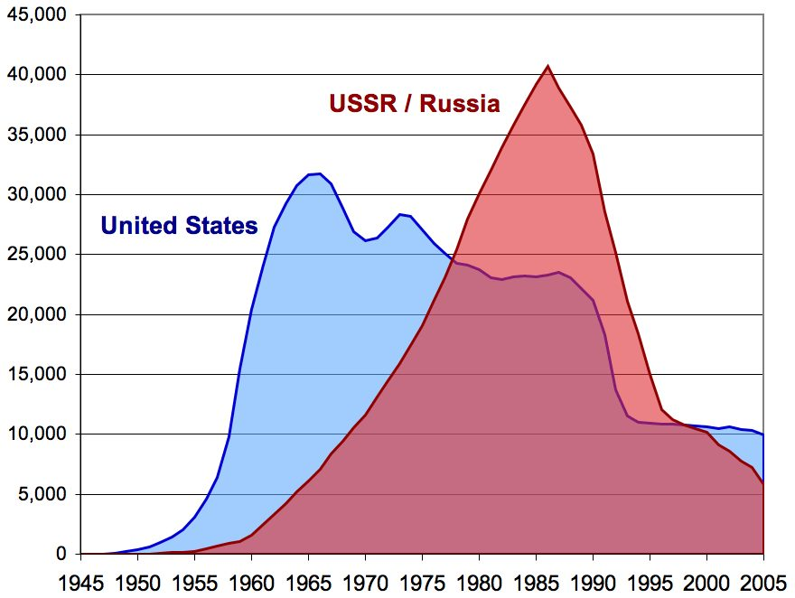

twist policy levers harder
… firing, twisting policy levers harder, hoping for …
更用力地拧政策的杠杆
把政策比成控制杆。第 6 章的「杠杆点」也是这个比喻。
第 5 章讲八个系统陷阱：反复出现、专门制造麻烦的结构。这一页是前半，先立一个判断：坏结果常被怪到某个人头上，其实是结构造的，换人、加罚都修不好，得改结构。然后是四个陷阱，毛病出在目标和反馈上：几方的目标互相拉扯（政策阻力），资源的状况传不到用的人那里（公地悲剧），目标跟着变差的表现往下降（目标侵蚀），目标定在对手身上再多一点（竞争升级）。好玩的是，每个陷阱都能在身边认出来。
第 4 章讲系统让人意外的几种性质。延迟、非线性、边界这些，作者说一般改不了、也不该改，只能学着预料。第 5 章换一类：有些结构不只是让人意外，而是会自己造出麻烦，而且在各处反复出现。这一页先讲这个判断，再讲前四个陷阱；后半页（05b）讲另外四个。每个陷阱都是第 1、2 章的零件拼出来的：一个存量，几条调节回路或增强回路。
别被带歪：§3 的对策沿着 Hardin 的思路：光靠劝诫不行，还得私有化或由监管者来管。后来 Ostrom 的研究发现，很多社区靠自己定、自己守的规矩长期管住了公地。见「本站怎么看」。
大家都很努力，为什么事情年年不见好，甚至越来越糟？
读的时候带着这几个问题，读完回来对照「检查一下理解」。
这一页是原书和译本第 5 章的前五节。粗体是本站给的节名，后面是档和译本字数；下面一行是译本的小标题和这一节在译本电子书里开头的几个字（搜它就能跳过去），再下面是英文原书的小标题和开头几个词，翻纸书用。读完打个勾。
先把这一页用到的几个概念用书外的例子讲一遍。作者拿它们推出什么，读原书时自己看。后面各页用到时会链回这里。
系统基模是反复出现、会造出同一类麻烦的结构。和软件里的「反模式」相通：换一个项目、换一批人，同样的坑照样有人掉进去，因为坑在结构里，不在人身上。
作者管会造麻烦的基模叫陷阱，因为人们的标准反应都对付不了它：找个人来怪，处分、开除，把政策的杠杆拧得更用力，或者在边上小修小补。换上来的人坐进同一个位置，面对同样的信息和激励，多半做出同样的事。逃的路有两条：事先认出来，不掉进去；或者改结构，比如重定目标，加强、减弱、改动反馈回路，或者加一条新回路。所以陷阱也是机会。每节最后的两个方框，一个说陷阱，一个说出路。
在这一页：§1 只有六段，是全章的总纲。这一页讲四个陷阱，05b 讲另外四个，每个都标出它由哪几条回路搭成。
一个存量，几方各有一个固定的目标，各自看着它，差得越多通常越用力往自己那边拉。办公室的空调就是这样：怕热的人要 22℃，怕冷的人要 26℃，一个把空调开到最大，一个在桌下开电暖器。谁占了上风，另一方就加码，温度停在谁都不满意的地方，电费却越来越高。书里管这叫棘轮：一方加力，各方都加力，加上去就很难退下来。
认它看两样：存量不怎么动，各方的力气在升级。原书小标题还给了它一个名字 Fixes that Fail（修不好的修补），对应译本：「治标不治本」。可只治症状、不碰病根，正是 05b 的转嫁负担的特征，本站只叫它政策阻力。
在这一页：§2 毒品供应那段，存量是街上的毒品，吸毒的人、执法部门、贩子、普通市民各要一个水平。
公司的全员群是个现成的例子。每发一条通知，好处全归发的人，打扰却摊给几百个人；没人因为群里已经很吵就少发一条。消息多到一定程度，大家开始屏蔽，群就废了，有事只好私聊。
作者给的条件有三条：资源是大家共用的；它不只有限，用过了头还会被耗坏，越少越难恢复；用的人有理由多用，而且多用的速度不受资源状况影响。病根在第三条：资源的状况传不回用的人那里，反馈缺了或者来得太晚。对策有三种：劝诫（群公告「请勿刷屏」），私有化（各部门建自己的群，吵了只吵自己），管制（只许管理员发、每人每周限几条）。私有化把反馈直接接回同一个人，管制经过管理者间接接回。
在这一页：§3 也讲共用的排污处这类「汇」。方框里的出路是劝诫，同时把反馈接回来，不是三选一。
刚搬进新家，桌上一点杂物都看不惯。乱了一点，「也还行」；再乱一点，「最近忙，正常」。标准跟着眼前的样子往下挪，屋子就一点点乱下去，从没乱到让人着急。
它本来是一条普通的调节回路：表现差了，和目标比出差距，加把劲。多了两样东西就变了：一是偏信坏消息，好的时候当碰巧，差的时候记得牢；二是目标跟着感知到的表现走。表现一滑，目标跟着滑，差距变小，力气变小，表现再滑。这条往下的增强回路压过了调节回路。和政策阻力的分别：政策阻力停在一个糟糕的老样子不动，目标侵蚀一直在变差。
在这一页：§4 的两个对策：标准定死不随表现调；或者让目标跟着过去最好的表现走，同一个结构就往上转。
两个朋友比健身打卡：你跑 5 公里，我跑 5.5；你看到了，跑 6。每个人的目标不是定死的数，而是对方的成绩再多一点。两个存量互相抬，拼成一条增强回路，按比例往上加，就是指数式的，比谁预想的都快，直到有人受伤或放弃。
要分清三样。以牙还牙是同等回敬，水平不动；要每次比对方多一点才会升级。和政策阻力比：升级是两个存量一起往上涨，政策阻力是一个存量停着不动，涨的只是力气。比的东西是好的（更快的电脑、治病的药），升级也能让整个系统跑得更快，麻烦是不容易停下来。出路两条：一方下决心单方面退出，扛住短期吃亏；或者谈出一组新的调节回路，把竞争关在一定范围里。

在这一页：§5 的例子从小孩打架、抹黑选战、价格战、广告，一直到酒会上越说越大声。
读英文原书时值得停一下的词和句：熟词生义、Meadows 的口语和比喻。灰色斜体是原句里连续的几个词，在英文电子书里搜它就能找到；标「每个字都认识」的，是每个词都眼熟、合起来意思却变了的，最容易读错。点「记下」收进词本。
对着译本读这五节时，下面这些地方会把人读歪。方框里是译本的原句，在译本电子书里搜它就能找到；灰色斜体是英文原书那一处。只收意思错了、反了、漏了的，措辞上的出入不收。全书的勘误汇总在译本勘误。
… know everything there is to know …
译本：「可以对世界上每一件事做到一览无余」
原文的题词是：理性的精英对自己那个自成一体的技术或科学小世界无所不知，却缺少更宽的视野。译本说成他们相信能看清世上每一件事，意思从「只懂一小块」变成了「自以为全懂」。同段「耶稣会士」也译成了耶稣的信徒。
… addiction, drift to low performance, and …
译本：「诸如公地悲剧、目标侵蚀和竞争升级等」
原文举的第一个是上瘾（05b 的转嫁负担），译本换成了公地悲剧。不影响理解基模是什么，但读者对照原书会对不上。
… finding in just one week of …
译本：「《国际先驱导报》」
International Herald Tribune 是巴黎出版的英文国际报纸，中文通称《国际先驱论坛报》。《国际先驱导报》是新华社办的一份中文周报，名字撞了。这一章各节题词的报名都是这样。
standard responses will not fix structural …
译本：「很难修正结构性问题」
原文语气很硬：容忍这些结构是不可能的，标准反应修不了结构问题。译本前一句成了「容忍也不足够」，这里成了「很难」。那串反应也乱了：「开除」漏了，「更用力拧政策」成了「建立或调整政策」，「破镜子」是译本加的。
by recognizing them in advance and
译本：「但前提是要预先识别出陷阱」
原文是两条并列的路：事先认出来、不掉进去；或者改结构。译本把「事先认出」变成了改结构的前提，少了一条最省事的出路：根本别进去。
… that investment tax credits and many …
译本：「投资税收贷款」
investment tax credit 是投资税收抵免：企业投资可以抵掉一部分税，不是贷款。题词里的「投资税贷款」也是这个词。
… have not managed to keep unemployment …
译本：「但失业率长期居高不下」
原文说几十年「创造就业」没能让失业率一直低着，译本说成失业率一直很高，这是另一个事实判断。同段「几乎没有证据说明有效」也成了「几乎没有什么效果」，「还没有一项政策能降下医疗费」成了劝告。
at great cost to themselves and
译本：「因为这不仅会增加他们自己的生活成本」
原文：罗马尼亚人抵制了政府，代价巨大，由他们自己和孤儿院里长大的一代人承担。译本把代价说成了抵制的原因。同段翻了三倍的是孕产妇死亡率（maternal mortality），不是所有育龄妇女的死亡率。
… You won’t get your way with …
译本：「在系统中，你可能得不到这种指示」
原文：放手以后，系统不会照你的意思走，但也不会像你担心的那样坏下去。前一句原文是把执法和抵抗双方花掉的力气挪去做更有用的事，译本把「执法和抵抗」读成了「增强和坚持」。这一段是这一节的出路，建议对着英文读。
was in response to your own action
译本：「因为你要花费很大的精力去采取纠正措施」
原文的理由是：你想纠正的那些动作，很多本来就是冲着你自己的动作来的，所以你一松，对方也松。这是这一节最反直觉、也最要紧的一句，译本换成了「你要花很大力气」，理由没了。
No child should be in material
译本：「没有孩子只存在物质需求」
瑞典政府和国民对齐的目标之一是：不该有孩子在物质上匮乏。译本这句读不通，也看不出这是一条让政府和家庭都能使劲的目标。
a commonly shared, erodable environment
译本：「对于人们共同分享的、有限的资源」
erodable 是会被侵蚀、耗坏。作者在 §3 特意强调，公地悲剧的资源不只有限，用过头还会越来越难恢复。这是判别条件，译成「有限的」就丢了一半。
In any commons system there is
译本：「在任何一个系统中，通常都有一些共享的资源」
原文：任何一个公地系统，首先要有共享的资源。译本说成任何系统都有共享资源，范围大了很多。下一段讲使用者，也把公地系统说成了所有系统。
The tragedy of the commons arises
译本：「一个重要原因是资源的消耗」
原文是全节的结论：公地悲剧出在从资源到使用者增长的反馈缺了或太慢。译本降成「一个重要原因」，方向也含糊了：要接回来的是资源状况对用量的约束。
social disapproval or eternal hellfire
译本：「以社会舆论谴责或严厉惩罚来威慑违规者」
第一种对策是劝诫：讲道理、讲道德，吓唬人说会被大家看不起，或者死后下地狱。译成「严厉惩罚」，就和第三种对策管制（靠执法和罚款）混了。
Garrett Hardin calls this option, bluntly,
译本：「达成共识，强制执行」
Hardin 的原话两次用 mutual：大家互相约束，而且这约束是大家同意的。译本的说法读来像上面对下面执行。红绿灯、停车计时器能管用，靠的正是「互相」这层意思。
if society is willing to let
译本：「相对于教育与劝诫，私有化的方案更为有效」
原文后半句：前提是社会肯让一些人吃苦头学乖。分到手的那份糟蹋了，后果自己担。译本丢了这个条件，读来像无条件地更有效。
feel the economic impact of its
译本：「让每个家庭直接从经济利益上得到收获」
原文：按量收的垃圾费直接补回了缺失的反馈，让每家感受到自己用了多少公地的经济后果。是扔得多付得多，不是得到收获。这正是「把反馈接回来」最清楚的例子。
new national characteristic of ineptitude
译本：「它的根源在于国家的新政策失当」
题词里英国报纸的原话是：温莎城堡失火是全国的缩影，源于无能这一新的国民性。说的是一国人对自己的期望在往下掉，正好是目标侵蚀；译成「政策失当」就成了政府的错。
we’re not doing much worse than
译本：「唉，我们至少不能比去年做得更差吧」
原文这句是给下滑找台阶：唉，我们也没比去年差多少。译本成了立一条底线，意思反了，正好丢了目标侵蚀的那个味道：拿变差的过去当标准。
is overwhelmed by a reinforcing feedback
译本：「它却被一个具有向下趋势的增强回路所掩盖」
overwhelmed 是压倒。调节回路还在，只是往下的增强回路更强，主导了行为，这是第 2 章讲的主导地位转换。说成「掩盖」，像是调节回路仍在起作用、只是看不见。
I don’t know whether it is true
译本：「它源自一个古老的寓言故事」
作者讲温水煮青蛙时在括号里加了一句：我不知道这是不是真的。译本删了，读来像作者认可这个说法。同段「这个陷阱的另一个名字是目标侵蚀」也没译，译本直接拿它当了正名。
wounding at least 120 people
译本：「至少导致20人受伤」
题词里加沙冲突的伤者，原文是至少 120 人。
I hit you back a little harder
译本：「你用了一份劲儿，我就还你两份」
原文：你打我，我还手重一点，你再重一点。每次只多一点，正是这个陷阱的规则，也正是它让人不知不觉陷进去的原因。译成加倍，就成了另一种更显眼的事。
is the decision rule that leads
译本：「以眼还眼，以牙还牙」
原文是扑克里的「我跟，再加一注」：要超过对方。以眼还眼是同等报复，照它做，冲突停在原来的水平，不会升级。这是认出这个陷阱的那一条，读译本时要换回来。
exaggerated their reports of each other’s armaments
译本：「而且每个参与者都有高估对方的敌意」
原文只说美苏多年来夸大对方的军备，好给自己多造武器找理由。译本加了一句，把它说成所有竞争者的通性，这是作者没说的话。
This system caused trillions of dollars
译本：「这一系统耗费了数十亿美元」
trillion 是万亿。美苏军备竞赛的花费，原文是数万亿美元，差了上千倍。
Escalation also could be about peacefulness,
译本：「竞争升级也可能是平静、礼貌的」
原文：升级比的东西也可以是好的，比谁更平和、更有礼貌、效率和品质更高。不是说升级本身很平静。接着她说，往好的方向比也有麻烦，因为停不下来。
builds exponentially. Therefore, it can carry
译本：「一旦超过某个限度」
原文：升级是增强回路，指数式发展，所以能比谁想的都快地走向极端。译本加了「一旦超过某个限度」，像是先要越过一道线。指数增长从一开始就在按比例加，只是开头看不出来。
下面是作者在这五节里的主张，本站按主张之间的逻辑重排，不按原书顺序；每条后面是节号，拿不准就回书里那一节再读一遍。
有些结构会反复造出同一类麻烦，她叫它们基模。破坏常被怪到某个人或某件事上；指责、处分、开除、更用力地拧政策、盼着事情换个顺序、小修小补，这些标准反应都修不了。她的证据是一周报纸里找到的例子，用来说明这些结构随处可见。
§1The destruction they cause is often blamed on particular actors or events, although it is actually a consequence of system structure.— §1。本站译：它们造成的破坏常被怪到某些人或某些事件头上，其实那是系统结构的后果。
政策阻力：几方各有目标，拉同一个存量，谁占上风别人就加倍拉回，存量停在谁都不要的地方。目标侵蚀：目标跟着感知到的表现走，人又偏信坏消息，往下的增强回路压过调节回路。竞争升级：目标取自对方的状态，再往上加一点，两个存量互相抬。
§2 §4 §5资源共用、会被耗坏，用的人有理由多用，而且多用的速度不受资源状况影响。好处全归自己，代价摊给大家。她列了三种对策：劝诫、私有化、管制，管制借用 Hardin 的说法。方框里的出路是劝诫，同时用私有化或管制把反馈接回来。
§3压服要一直有足够的权力，代价是巨大的怨恨，权力一松就可能爆开。放手是反直觉的另一条路。最有效的是给各方一个都能朝它使劲的更大目标，比如战时动员、瑞典的人口政策；她承认不总能找到，但值得找。
§2much of the action you were trying to correct was in response to your own action.— §2。本站译：你想纠正的那些动作，很多本来就是在回应你自己的动作。
目标侵蚀：标准定死，或者让目标跟着过去最好的表现走，同一个结构就往上转。竞争升级：比的是好东西也能加快整个系统，只是不容易停；出路是单方面裁军，或者谈出一组新的调节回路。陷阱不一定都是坏事。
§4 §5合起来：遇到怎么使劲都不见好的事，先别找人怪，看结构：几方的目标在打架吗？用的人收得到资源变坏的信号吗？目标是不是在跟着变差的表现往下挪，或者跟着对手往上抬？找到了，就改目标或反馈。
处境是本站编的，放在你可能遇到的地方。先自己想，再点开看分析；有的题不只一个答案。全书的情境题汇总在情境题。
某市嫌网约车太多、路上太堵，提高了车辆和司机的准入标准，想两年内把在跑的网约车减三成。平台怕订单流失，加大补贴招新司机；不合规的司机挂靠到合规公司名下接着跑；高峰打不到车的乘客转去坐没牌照的黑车。两年后路上拉客的车几乎没少，执法检查和平台补贴却都比两年前多了好几倍。
这是哪个陷阱？存量是什么，各方想把它拉到哪里？出路在哪？
政策阻力，选 B。只有一个存量：路上拉客的车。市里要它少，平台要它多，司机要收入，乘客要打得到车，各自朝自己的目标往回拉。执法越严，补贴、挂靠、黑车跟着加码，力气在升级，存量不动。
A 容易错选：竞争升级是两个存量各自往上涨，目标定在「比对方多一点」；这里只有一个存量。C 不对，市里的目标没降。出路照书里：先别再加码准入，把各方叫到一起，找一个大家都认的更大目标，比如高峰十分钟内打得到车、主干道车速不低于多少、司机收入不低于多少。
书里对应：§2 政策阻力：治标不治本
一个服务的延迟目标是：99% 的请求在 300 毫秒内返回。季度复盘实测 350 毫秒，组长说「别的服务也差不多，先改成 400」。下个季度实测 420，「比上季度也没差多少」，改成 450。一年后实测 600，复盘会上没人着急。中间有一个季度做过优化，降到 330，大家说那是流量少，碰巧。
这是哪个陷阱？和「指标选错了」有什么不同？怎么改？
目标侵蚀，选 A。量的东西一直是同一个延迟指标，没换；换的是标准的高度，而且跟着最近的表现往下调。好的那个季度被当成碰巧，差的被记住，这是偏信坏消息。每次只差一点，所以没人着急。
B 是 05b 讲的另一个陷阱：指标量错了东西，系统老老实实照着错的指标做。这里指标没错。C 不对：政策阻力的存量停着不动，这里一直在变差。出路：把 300 毫秒定死，不随表现调；或者拿最好的那个季度（330）当基准，把它当成本事，不当运气。
书里对应：§4 目标侵蚀
同一个小区的两家，孩子在同一个年级。张家给孩子报了三门课外班；李家听说了，报了四门，「总不能比人家少」。张家看了，加到五门，周六周日都排满了。两家孩子都喊累，家长也知道效果不见得好，可谁先减谁就觉得吃亏。
这是哪个陷阱？靠什么认出来？有什么出路？
竞争升级，选 B。认它靠决策规则：每家报几门，不看孩子需要几门，看对方报了几门，再多一点。两家的课时互相抬，一起往上涨。富者愈富（05b）的结局是一方吞掉另一方，这里没人赢走什么，两家一起变累。C 不沾边，两家没有共用一样会被耗坏的东西。
书里的两条出路都用得上：一家下决心单方面减下来，扛得住暂时落后的焦虑，循环就断了；或者谈出一个新的调节回路，比如几家约好上限，或者学校、家长群出面定规矩。最好是一开始就别拿「比对方多」当目标。
书里对应：§5 竞争升级
两家外卖 App 抢用户。甲每天给用户推送两条消息；乙不甘落后，改成每天三条，再加开屏弹窗；甲又加了红包雨提醒。一年后两家每天合计推七八条。用户受不了，干脆把两家的通知都关了，两家推送的打开率一起掉到原来的零头。两家的运营开会，都提议再多推几条，把量补回来。
这里有哪个陷阱？只有一个吗？
主线是竞争升级：每家推几条看的是对方，再多一点，两家一起往上涨。再看用户的注意力：两家共用，而且会被用坏，推得太多用户就关通知，这块地就荒了；每家多推一条的好处归自己，打扰的代价两家分摊，这是公地悲剧。两个陷阱叠在一起。
出路要两样都管：两家或者手机系统、应用商店定一个推送上限，这是谈出新的调节回路；让用户能按 App 单独管通知，打扰的代价直接落到推的那一家，这是补上缺的反馈。
书里对应：§5 竞争升级；§3 公地悲剧
Meadows 1993 年写成初稿，书 2008 年出版。下面挑出这一页里能被后来的研究或事情检验的说法，分「书里 / 当时 / 今天」几栏，并给一个结论。结论判的是标题里「书里的说法：」后面那一句。全书的这一节汇总在今天怎么看。
读完作者的主张，再看它站不站得住。每一块摆出三样：主流怎么看，作者怎么看，本站的评论。最后一句是本站对这一页的总体判断。
主流看法：软件运维里通行「不追责的复盘」（blameless postmortem）。Google 的《SRE》一书（2016）专门有一章讲它：复盘要找促成事故的各种因素，不点名说哪个人或哪个团队做错了；书里说这种做法来自医疗和航空，那些行业出错会死人。
作者的看法：陷阱的破坏常被怪到个人或事件头上，其实是结构的后果；指责、处分、开除修不了结构问题。§1
本站的评论：这是这一章最有用的一句，也最容易用过头。她的证据是一周报纸里挑出来的例子，是举例，不是检验。「怪人修不了」也不等于没人该负责：定下这个结构、能改却不改的人，也在结构里。一个好用的问法：换一个人坐这个位置，事情会不会照样发生？会，就去改结构。
主流看法：政治学家 Elinor Ostrom 1990 年出版 Governing the Commons。她研究过瑞士的高山牧场、菲律宾的灌溉系统等许多地方，发现很多社区靠自己定、自己守的规则长期管住了公地，既没私有化，也不全靠政府。她总结的条件包括边界清楚、有解决争端的办法、外面的政府承认社区自己定规矩。2009 年她因此获诺贝尔经济学奖，是第一位获这个奖的女性。
作者的看法：转述 Hardin 认为劝诫靠不住；她自己说私有化比劝诫可靠，私有化不了的只剩管制，监管者要懂行、有威慑、不腐败。§3
本站的评论：Ostrom 的社区规则很像「互相同意的互相强制」，只是定规矩、看着资源的是用的人自己。作者提到有的传统社会靠教育和劝诫管好了公地，接着引 Hardin 说它靠不住，就没再往下追。开源社区、公司里的共享集群，多半也走这第三条路。
主流看法：葡萄牙 2001 年把持有少量毒品改为行政处罚，同时扩大治疗，此后注射吸毒者里新发的艾滋病大幅下降；研究者提醒这是一揽子改革，分不清各占多少功劳。美国俄勒冈州 2020 年投票让持有毒品除罪化，2024 年州议会又恢复了刑事处罚。
作者的看法：压服要一直有权力，代价是怨恨；放手不会像你想的那么坏，因为你要纠正的动作很多是冲着你来的。§2
本站的评论：那条理由最站得住：先看对方是不是在回应你。「不会那么坏」是经验判断，例子也挑过。罗马尼亚的出生率按年度数字是从 1966 年的千分之 14.3 升到 1967 年的 27.4，约翻一倍，书里写三倍；和齐奥塞斯库一起被处决的是他妻子，不是全家。她说的放手，还包括把双方的力气挪去更有用的地方。
本站的总体看法：「看结构，别只怪人」是这一章最值钱的一招，四个陷阱的结构也讲得清楚，身边一认一个准。要打折扣的是证据和对策：例子多是挑出来的，公地的对策跟着 Hardin 漏了社区自治那条路，放手的效果要看放的是什么、同时做了什么。
先在心里答，再点开。答错的那题，回书里把对应那一节再读一遍。
叫陷阱，是因为指责、开除、加大政策力度这些标准反应都修不了它们。也是机会，因为能逃：事先认出来不掉进去，或者改目标、改回路。
货少了价格就涨，吸毒的人去偷抢更多钱，贩子赚得更多，拿钱买船买飞机绕开边检。各方都朝自己的目标加倍拉回，存量停在原处，谁都不满意。
你想纠正的那些动作，很多本来就是在回应你自己的动作。你松手，对方也会松；省下双方的力气，再去看清各方为什么那样做。
不够。还要会被耗坏，用过了头越来越难恢复；而且用的人有理由多用，多用的速度不受资源状况影响。病根是资源的状况传不回用的人。
以前扔多扔少，代价都摊给全城；按量收费以后，每家扔多少就付多少，资源被用的后果直接落回做决定的那一家。
政策阻力停在一个大家都不满意的老样子，不怎么动；目标侵蚀一直在变差，因为目标跟着感知到的表现往下挪。
比邻居多一点。作者说升级不只是跟上邻居，而是要稍微领先：每一方的目标取自对方的状态，再往上加，两边互相抬，成了增强回路。
用一句话说这一页：
想一想：你的团队或家里，有没有一个标准这几年悄悄降过，或者一件事大家越用力越僵？它像这一页的哪个陷阱？如果改结构，你会先改目标、改反馈，还是先放手？
读过又忘了，从这里想起来。挑的是这一页最值得记住的例子和说法，不按原书顺序；每条后面是节号，想细看就回书里那一节。全书各页的这一节都收在全书回顾。
一句话：坏结果常是结构造的；几方目标打架、反馈断了、目标往下溜、目标盯着对手，是四个常见的陷阱，出路都是改目标或改反馈。
破坏常被怪到某个人头上，其实是结构造的。换人、处分、更用力地拧政策都没用；要么事先认出来别掉进去，要么改结构。
§1执法截了货，价格涨，吸毒的人多偷多抢，贩子多赚钱买船买飞机。几方各拉一头，存量几乎不动，力气越用越大。
§2你想纠正的动作，很多本来是冲着你来的；你松手，对方也会松。她的例子：1933 年美国废除禁酒令，酒带来的乱子也大体平息了。
§2牧民多养一头牛，收益全拿，草场的损失只摊到一小份。出路是劝诫，同时用私有化或管制把反馈接回来，比如垃圾按量收费。
§3表现慢慢变差，目标跟着降，就没人着急。出路是标准定死，或者盯住过去最好的成绩。真青蛙会跳出来，作者自己也存疑。
§4不只是跟上邻居，是要比邻居多一点。两边一起往上涨，不管它，通常以有人垮掉收场；出路是单方面退出，或者谈出管住双方的规矩。
§5